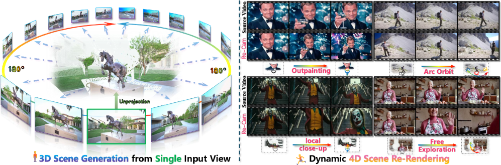
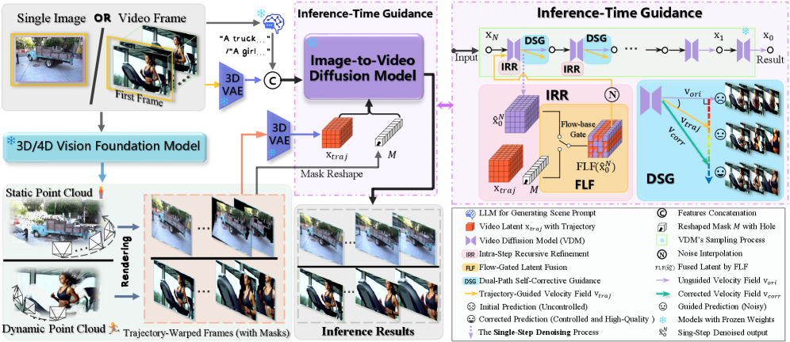
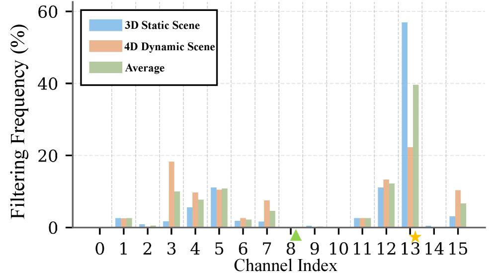
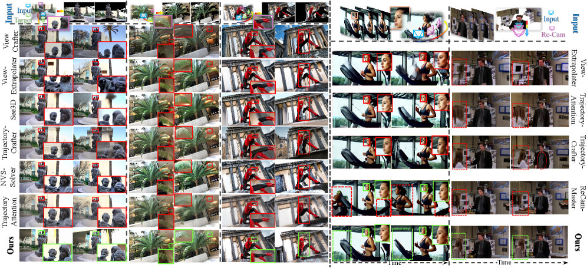
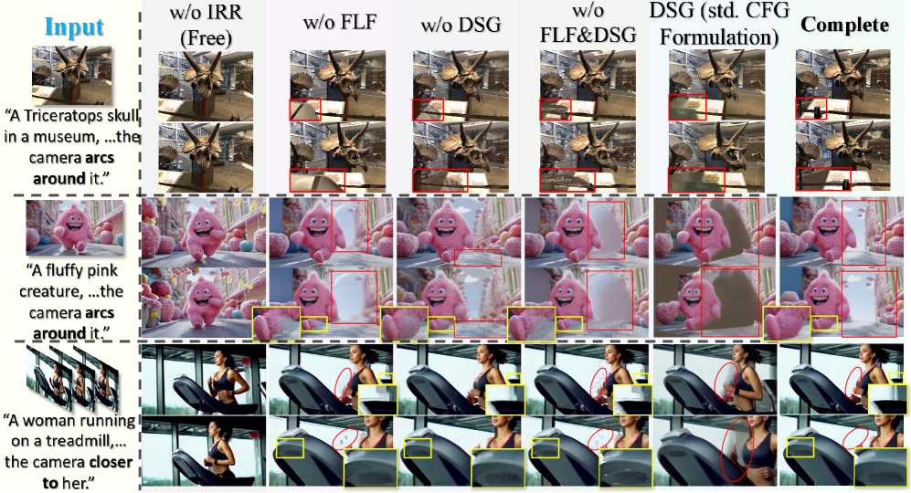
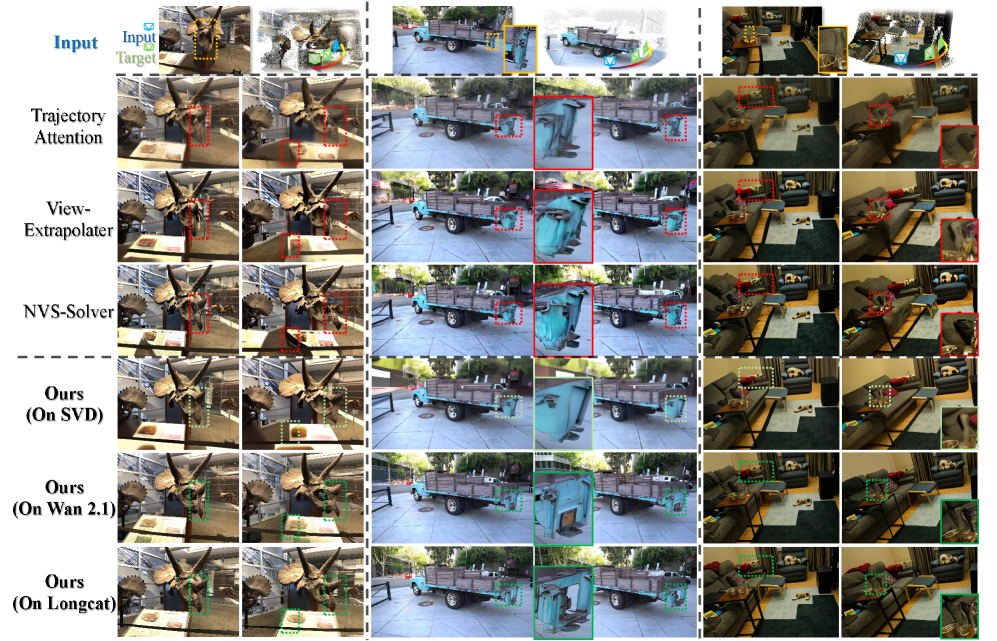

WorldForge: 不训练,把 6-DoF 相机轨迹"注射"进 Wan2.1 视频扩散模型

1. 出发点 (Motivation)
视频扩散模型 (VDM) 像 Wan2.1、SVD、CogVideoX,在百万小时视频上预训出了非常丰富的时空先验。但"把它当 3D / 4D 引擎用"几乎不可能:
- 训不动相机控制 (training-based): CameraCtrl / MotionCtrl / ReCamMaster / 3DTrajMaster / VD3D 都是"在 motion-conditioned 数据上 finetune 主干"。问题是 — (a) 算力贵到 GPU 月,(b) 在 fine-tuning 数据分布外的相机轨迹上崩溃,(c) 微调会"伤"主干预训学到的物理/光照先验。论文原话:"computationally costly, generalizes poorly, and risks degrading pretrained priors."
- 训练免费的 "warp-and-repaint" (training-free): NVS-Solver / ViewExtrapolator / TrajectoryAttention / Free4D 走的是另一条路 — 用单目深度把源帧 warp 到目标视角,再让 VDM 把遮挡空洞 + warp 噪点当 inpainting 修补。问题是预训模型没见过这种 warp 出来的 OOD 输入,常常出现"幻觉运动" (静态场景被模型脑补成动态) 和"几何碎裂"。
WorldForge 押的注:VDM 已经知道"视频应该长什么样",我们只需要在推理时"告诉它相机该怎么走" — 不重新训,不改权重,只在 50 步去噪的前 ~20 步插入三个 guidance 模块,把"目标轨迹"软性注入 latent 轨道里就够。
TL;DR (30 字): 训练免费、推理时分三层引导 (IRR + FLF + DSG),把 6-DoF 相机轨迹注入预训 VDM,既不掉画质又拿 SOTA 控制精度。
2. 方法 (Method)
核心思想 (类比)
把扩散模型的 50 步采样想成"画家从一片噪点反推一段视频":
- 原本画家可以画任何视角 — 我们想强行规定"必须从这个角度看"。
- IRR (递归精炼) ≈ 在每一次画到一半时,把"参考照片里看得见的部分"硬贴回去 → 再加点噪声让画家继续画。是一个 per-step 的预测-校正循环,但只发生在干净 $\hat{x}_0$ 空间,不在带噪的 $x_t$ 空间 — 这一点 critical,因为是 FLF 能选 channel 的前提。
- FLF (光流门控融合) ≈ VAE 的 16 个潜变量 channel 不是平等的 — 有的管"形状",有的管"运动方向"。我们光流测每个 channel,只覆盖"运动方向跟目标轨迹一致"的 channel,留下其它 channel 让模型自由发挥纹理。
- DSG (双路自校正) ≈ 跑两次预测:一次"自由发挥" (画质好但不走我们要的轨迹),一次"被 IRR/FLF 强制约束" (走对轨迹但有 warp 伪影)。然后把两者做APG/CFG-Zero 风格的正交投影,只保留"约束方向上的修正",滤掉"约束本身带进来的噪点"。
结果是 — 模型仍然在自己熟悉的 video manifold 上采样,只是"被推往"用户指定的相机路径。
2.1 整体管线

底座是任意一个 latent video diffusion model (paper 用 Wan2.1 I2V-14B / SVD / LongCat-Video)。Wan2.1 的一步去噪:
$$\hat{\mathbf{x}}_0(\mathbf{x}_t, t) = \frac{\mathbf{x}_t - \sqrt{1-\bar{\alpha}_t}\,\boldsymbol{\epsilon}_\theta(\mathbf{x}_t, t)}{\sqrt{\bar{\alpha}_t}} \quad \text{(Eq. 1)}$$$\hat{\mathbf{x}}_0$ 是当前步对"最终干净 latent"的预测。WorldForge 三个模块全部作用在 $\hat{\mathbf{x}}_0$ 上,而非 $\mathbf{x}_t$。这是和 RePaint / NVS-Solver 最本质的差异 — 后者在带噪 latent 空间融合,VAE 解码会把 warp 的硬边变成 ringing artifact;前者在干净 latent 空间融合,光流和 mask 行为可预测。
Warp 是一个标准的可微 splatting:
$$(\mathbf{I}'_{tar}, \mathbf{M}_{tar}) = \mathcal{W}(\mathbf{I}_{src}, \mathbf{D}_{src}, \mathbf{P}_{src}, \mathbf{P}_{tar}) \quad \text{(Eq. 4)}$$- $\mathbf{I}_{src}, \mathbf{D}_{src}$ — 源 RGB + 深度 (来自 VGGT / UniDepth / Mega-SaM / DepthCrafter)。
- $\mathbf{P}_{src}, \mathbf{P}_{tar}$ — 源 / 目标相机姿态 (用户给)。
- $\mathbf{I}'_{tar}$ — 沿目标轨迹 warp 出来的目标帧,带遮挡空洞。
- $\mathbf{M}_{tar}$ — 可见性 mask (空洞处 = 0)。
Warp 完的帧用 VAE encode 进 latent 空间,叫 $\mathbf{x}_{\text{traj}}$。从这里开始三个模块上场。
2.2 IRR — Intra-Step Recursive Refinement (步内递归精炼)
Plain English: 每一步去噪后,把 $\hat{\mathbf{x}}_0$ 中"mask 可见区域"换成 trajectory latent,再用 scheduler 的 add_noise 把结果退回到当前 sigma 噪声水平,让 transformer 再去噪一次 (paper 称为"resample")。每个 outer step 跑 2~3 次这种"贴回-去噪"循环。本质是 per-step 预测器-校正器。
$$\boxed{\;\mathbf{x}_t' = (1 - w(\sigma))\,\mathbf{F}(\hat{\mathbf{x}}_0^{(t)}, \mathbf{x}_{\text{traj}}) + w(\sigma)\cdot\boldsymbol{\epsilon}\;} \quad \text{(Eq. 5)}$$ $$\mathbf{F}(\hat{\mathbf{x}}_0^{(t)}, \mathbf{x}_{\text{traj}}) = \mathbf{M}\cdot \mathbf{x}_{\text{traj}} + (1-\mathbf{M})\cdot \hat{\mathbf{x}}_0^{(t)}$$- $\hat{\mathbf{x}}_0^{(t)}$ — 当前步预测的"干净 latent"。
- $\mathbf{x}_{\text{traj}}$ — VAE-encoded warp 帧 (固定不变)。
- $\mathbf{M}$ — 二值可见性 mask (硬贴边会有 ringing,代码里用距离变换 + sine decay 软化,见 §4)。
- $\mathbf{F}$ — mask blend。
- $w(\sigma)$ — re-noise 强度,跟随当前 sigma 调度。
- $\boldsymbol{\epsilon}\sim\mathcal{N}(\mathbf{0}, \mathbf{I})$ — Gaussian 噪声。
与 RePaint 的差异:RePaint 在 $\mathbf{x}_{t-1}$ (带噪) 空间融合,WorldForge 在 $\hat{\mathbf{x}}_0$ (干净) 空间。这一选择决定了 FLF 能否工作 — 因为只有在 clean latent 空间,VAE channel 的"运动语义"才是稳定的。
2.3 FLF — Flow-Gated Latent Fusion (光流门控潜变量融合)
Plain English: Wan2.1 的 VAE latent 有 16 个 channel,作者发现它们的"运动语义角色"稳定:某些 channel 主要编码运动方向,另一些主要编码外观纹理。如果 IRR 在所有 16 个 channel 上都贴 warp 帧,会把"外观 channel"也覆写掉,纹理就坏了。FLF 的做法:
- 对 $\hat{\mathbf{x}}_0$ 和 $\mathbf{x}_{\text{traj}}$ 的每个 channel分别跑 RAFT/Farnebäck 光流。
- 用三种 metric 算 channel 的"运动一致性分数" $S^{(t,c)}$:Masked End-Point Error (M-EPE)、Masked Angular Error (M-AE)、Outlier % (Fl-all)。
- 分数低于自适应阈值 $\delta^{(t)} = \mu_S - \lambda\sigma_S$ 的 channel不被覆写 (让模型自由发挥纹理);其它 channel 才接受 IRR 的 warp 注入。
- $c$ — channel 下标 ($c=0\ldots 15$)。
- $\gamma_k = [0.4, 0.4, 0.2]$ — EPE / AE / Fl-all 的权重 (paper 值;代码里 §4 写的是 $[0.45, 0.10, 0.45]$,小差异)。
- $\lambda^{(t)} = 0.65$ — 阈值标准差倍数,paper 说"loose-to-tight" schedule。
Eq. 7 替换掉 Eq. 5 里的 $\mathbf{F}$,所以 FLF 是 IRR 的插件。

2.4 DSG — Dual-Path Self-Corrective Guidance (双路自校正引导)
Plain English: 即使 IRR + FLF 加上,warp 帧本身带 depth error / occlusion hole,模型很难完全"信任"它们。DSG 在每个 step 跑两次前向:
- Unguided path: 用原始 $\mathbf{x}_t$ 跑 → 得到速度场 $\mathbf{v}_t^{\text{ori}}$ (画质好,轨迹自由)。
- Guided path: 用 IRR/FLF 修过的 $\mathbf{x}_t'$ 跑 → 得到 $\mathbf{v}_t^{\text{traj}}$ (轨迹对,有 warp 噪点)。
关键观察:作者实测两条速度场之间的余弦相似度 $\alpha_t$ 通常落在0.3–0.6 (角度 50°–70°),远大于普通 CFG 的"prompt 改一改"的角度差。直接套 CFG (加权差分) 会因为方向差太大而崩 — 需要把"差异中跟 guided 方向平行的部分"投影掉,只用正交分量。
$$\boxed{\;\mathbf{v}_t^{\text{corr}} = \mathbf{v}_t^{\text{traj}} + \rho\cdot\beta_t\bigl(\mathbf{v}_t^{\text{traj}} - \alpha_t\cdot\mathbf{v}_t^{\text{ori}}\bigr)\;} \quad \text{(Eq. 8)}$$- $\alpha_t = \cos\theta = \mathbf{v}_t^{\text{traj}}\cdot \mathbf{v}_t^{\text{ori}}/(\|\mathbf{v}_t^{\text{traj}}\|\|\mathbf{v}_t^{\text{ori}}\|)$ — 余弦相似度。
- $\beta_t = \sqrt{1-\alpha_t^2} = \sin\theta$ — 自适应权重:两条路越正交,修正越大。这是 APG/CFG-Zero 公式,被 WorldForge 借用到"自身两条 path"的场景。
- $\rho = 4.0$ — guidance scale (paper 推荐;代码里 omega 默认 1.8,run_test_case.sh 设 4)。
- $(\mathbf{v}_t^{\text{traj}} - \alpha_t \mathbf{v}_t^{\text{ori}})$ — guided 速度场扣掉与 unguided 平行的分量 → 剩下的就是"轨迹修正方向"。
这是关键 design choice:消融里用普通 CFG 形式替换 DSG,FID 从 96 涨到 121 (比完全去掉 DSG 还烂),说明"方向差大时必须做正交投影"。
2.5 完整算法
Wan2.1 I2V-14B,50 步 UniPC scheduler:
输入: 单张图 / 视频帧 I_src + 用户相机轨迹 P_tar[1..N]
预处理:
(1) VGGT 估计 camera P_src + depth D_src
(2) warp_single_img(I_src, D_src, P_src, P_tar) → I'_tar, M (PNG 落盘)
(3) VAE encode I'_tar → x_traj (latent 空间,在每个 step 内重算)
主循环 for t in [T..1]:
if t 在前 guide_steps (=20) 步:
for r in [0 .. resample_steps-1]: # IRR 内循环, 2~3 次
noise_pred = transformer(x_t, condition, t)
noise_pred += guidance_scale * (noise_pred - noise_uncond) # CFG
存入 derivative_history
pred_x0 = scheduler.step(noise_pred, t, x_t,
video_ref=I'_tar, mask=M,
use_pca_channel_selection=True)
# ↑ scheduler 内部: VAE.decode(pred_x0) → mask-blend I'_tar
# → VAE.encode → FLF channel select 还原
if r < resample_steps-1:
x_t = scheduler.add_noise(pred_x0, ε, t) # re-noise → 下一轮 IRR
# IRR 内循环结束
if len(derivative_history) ≥ 2:
DSG: 取 history[0]=noise_pred_worse, history[-1]=noise_pred_good
按 Eq. 8 算 noise_pred_better
scheduler.step(noise_pred_better, ...) → x_{t-1}
else:
# 后 30 步: 标准 UniPC 去噪, 无 IRR/FLF/DSG
x_{t-1} = scheduler.step(transformer(x_t, ..., t), t, x_t)
输出: VAE.decode(x_0) → 49 帧 720p 视频 @ 16fps
三个模块的角色:
- IRR = 外循环 (per-step 的 predictor-corrector,2-3 轮)。
- FLF = 内部门控 (在 scheduler step 里决定哪些 channel 接受 warp 注入)。
- DSG = 收尾合成 (从 IRR 内循环的"早期"和"晚期"两个 noise prediction 做正交合成,产出真正用来 step 的速度场)。
3. 结论 (Key Findings)

Table 1 — 3D 静态场景 (70+ views from 40+ scenes):
| Method | FID↓ | CLIP_sim↑ | ATE↓ | RPE-T↓ | RPE-R↓ | 训练免费 |
|---|---|---|---|---|---|---|
| See3D | 123.26 | 0.941 | 0.091 | 0.089 | 0.250 | ✗ |
| ViewCrafter | 117.50 | 0.930 | 0.236 | 0.315 | 0.728 | ✗ |
| ViewExtrapolator | 125.50 | 0.930 | 0.183 | 0.260 | 0.882 | ✓ |
| TrajectoryAttention | 122.37 | 0.920 | 0.159 | 0.238 | 0.532 | ✗ |
| TrajectoryCrafter | 111.49 | 0.910 | 0.090 | 0.152 | 0.267 | ✗ |
| NVS-Solver | 118.64 | 0.937 | 0.224 | 0.268 | 1.056 | ✓ |
| WorldForge | 96.08 | 0.948 | 0.077 | 0.086 | 0.221 | ✓ |
WorldForge 在每个指标上都领先,而且是唯一一个 zero-shot 方法把所有训练式 baseline 都打过的。
Table 2 — 4D 动态场景 (50+ videos from 30+ sources, DAVIS + 电影片段 + VDM 自生成):
| Method | FVD↓ | CLIP-V_sim↑ | ATE↓ | RPE-T↓ | RPE-R↓ | 训练免费 |
|---|---|---|---|---|---|---|
| ViewExtrapolator | 108.48 | 0.913 | 1.040 | 1.208 | 4.750 | ✓ |
| TrajectoryAttention | 106.94 | 0.911 | 0.605 | 1.238 | 3.560 | ✗ |
| TrajectoryCrafter | 97.31 | 0.923 | 0.431 | 1.078 | 8.950 | ✗ |
| WorldForge | 93.17 | 0.938 | 0.527 | 0.826 | 2.690 | ✓ |
4D 动态比 3D 静态难得多 — WorldForge 拿到 FVD / 感知 / 旋转 / 平移 误差 4/5 个最佳,ATE 上输给 TrajectoryCrafter 但旋转误差只有它的 1/3。

Table 3 — 数值消融 (FID/CLIP for 3D, FVD/CLIP-V for 4D):
| Variant | Static FID↓ | Static CLIP↑ | Dyn FVD↓ | Dyn CLIP-V↑ |
|---|---|---|---|---|
| w/o DSG | 109.43 | 0.943 | 95.69 | 0.937 |
| w/o FLF | 112.69 | 0.945 | 99.79 | 0.932 |
| w/o DSG & FLF | 113.12 | 0.943 | 103.17 | 0.931 |
| DSG using vanilla CFG | 120.91 | 0.936 | 109.10 | 0.919 |
| Complete | 96.08 | 0.948 | 93.17 | 0.938 |
最有意思的一行:"DSG using vanilla CFG" 比"w/o DSG"还要差 (FID 121 vs 109)。方向差太大时,简单加权 = 在错误方向加重错误。这是 DSG 必须用正交投影的关键证据。

4. 实现细节 (Implementation Notes — paper 没说的 code-only 细节)
代码:github.com/Westlake-AGI-Lab/WorldForge(commit ee573a0)。主路径:wan_for_worldforge/infer_worldforge.py → utils/pipeline_wan_i2v_clean.py → utils/scheduling_unipc_multistep_clean.py。Code cross-read 揪出的 10+ 个细节:
4.1 IRR 主循环 (per-step resample)
repo/wan_for_worldforge/utils/pipeline_wan_i2v_clean.py:L562-L662 — IRR 外循环 + scheduler.step + add_noise re-noise
with self.progress_bar(total=num_inference_steps) as progress_bar:
for i, t in enumerate(timesteps):
self.scheduler.derivative_history = []
for r in range(resample_steps):
if r > 0:
self.scheduler.set_resample_mode(True)
resample_timestep = self.scheduler.get_resample_timestep(i)
timestep_for_transformer = resample_timestep.expand(latents.shape[0])
else:
self.scheduler.set_resample_mode(False)
timestep_for_transformer = t.expand(latents.shape[0])
# CFG forward
latent_model_input = torch.cat([latents, condition], dim=1)
noise_pred = self.transformer(...)[0]
if self.do_classifier_free_guidance:
noise_uncond = self.transformer(...)[0]
noise_pred = noise_pred + guidance_scale * (noise_pred - noise_uncond)
if r < 1:
self.scheduler.derivative_history.append(noise_pred) # for DSG
# FLF fusion happens inside scheduler.step (see 4.2)
scheduler_output = self.scheduler.step(noise_pred, t, latents,
mask=mask, guided=guided and i < guide_steps,
video_latents=video_ref, vae=self.vae, resampling=r > 0, ...)
pred_original_sample = scheduler_output.pred_x0
if r < resample_steps - 1:
# IRR re-noise: 把 pred_x0 退回当前 sigma 的噪声水平
noise = torch.randn(pred_original_sample.shape, device=device)
latents = self.scheduler.add_noise(pred_original_sample, noise,
self.scheduler.get_resample_timestep(i), r, use_resample_sigma=True)
注意 derivative_history 只在 r < 1 时 append(代码里写的是 r < 1 不是 r == 0,等价但更脆弱)。如果 resample_steps = 1,DSG 静默 no-op。
4.2 FLF 在 scheduler 内部的实现
repo/wan_for_worldforge/utils/scheduling_unipc_multistep_clean.py:L1373-L1417 — VAE decode → mask blend → VAE encode → channel select 还原
video_latents = 2.0 * video_latents - 1.0 # 0..1 → -1..1
if mask.shape[1] != decoded_video.shape[1]:
mask = mask.repeat(1, decoded_video.shape[1], 1, 1, 1)
fused_video = video_latents * mask + decoded_video * (1 - mask) # pixel-space blend
encoded_video = vae.encode(fused_video).latent_dist.mode()
encoded_video = (encoded_video - latents_mean) * latents_std
if kwargs.get('use_pca_channel_selection') and not kwargs.get('resampling', False):
if self._pca_selector is None:
self._pca_selector = VideoMotionPCASelector()
channels_to_replace = self._pca_selector.select_motion_related_channels(
pred_original_sample=pred_original_sample,
video_latents=encoded_video_aligned,
keep_channels=12, current_step=current_step, total_steps=total_steps,
use_optical_flow=use_optical_flow, static=static,
)
# 不接受 warp 的 channel: 把 pred_x0 的值贴回来
for channel_idx in channels_to_replace:
encoded_video[:, channel_idx, :, :, :] = pred_original_sample[:, channel_idx, :, :, :]
return encoded_video
这段是 FLF 的实际执行。两个 critical points:
- "PCA" 是个 misnomer. 类名叫
VideoMotionPCASelector,flag 叫use_pca_channel_selection,但实现里没有任何 PCA — 就是 OpenCV Farnebäck 光流 + EPE/AE/Fl-all 加权评分 (scheduling_unipc_multistep_clean.py:L338-L437)。Paper 写 "PCA channel selection",代码做 "optical-flow channel selection"。 - 融合发生在 pixel 空间,不是 latent 空间。每一步 IRR 都要:VAE decode → mask blend → VAE encode 一遍。这是主要的计算开销 (paper Table S3 也确认了这点)。
4.3 DSG 投影公式
repo/wan_for_worldforge/utils/pipeline_wan_i2v_clean.py:L664-L708 — 从 derivative_history 取首末两个 noise_pred,正交投影
if len(self.scheduler.derivative_history) > 1:
noise_pred_good = self.scheduler.derivative_history[-1] # IRR 收敛后的"好"预测
noise_pred_worse = self.scheduler.derivative_history[0] # IRR 起步时的"差"预测
dot_product = torch.sum(noise_pred_good * noise_pred_worse, dim=[1,2,3,4], keepdim=True)
norm_good = torch.sqrt(torch.sum(noise_pred_good**2, dim=[1,2,3,4], keepdim=True))
norm_worse = torch.sqrt(torch.sum(noise_pred_worse**2, dim=[1,2,3,4], keepdim=True))
cos_theta = dot_product / (norm_good * norm_worse + 1e-8)
sin_theta = torch.sin(torch.acos(torch.clamp(cos_theta, -1.0, 1.0)))
magnitude_ratio = norm_good / (norm_worse + 1e-8)
if i >= guide_steps:
omega = omega_resample
# Eq. 8 的代码版: noise_pred_better = good + ω·sin(θ)·(good - (|good|/|worse|·cos(θ))·worse)
noise_pred_better = noise_pred_good + omega * sin_theta * (
noise_pred_good - (magnitude_ratio * cos_theta) * noise_pred_worse)
# 倒回一步, 用 noise_pred_better 重新跑 multistep UniPC
self.scheduler._step_index -= 1
noise_pred_convert = self.scheduler.convert_model_output(noise_pred_better, sample=latents)
self.scheduler.model_outputs[-1] = noise_pred_convert
latents = self.scheduler.multistep_uni_p_bh_update(
model_output=noise_pred_better, sample=latents, order=self.scheduler.this_order)
关键:noise_pred_worse 和 noise_pred_good 不是 conditional / unconditional (那是 CFG),而是同一个 IRR 内循环的"早期"和"晚期"两次 CFG 后预测。Paper 写 "unguided vs guided",代码里其实是"IRR 第一轮 vs 最后一轮"。是更 elegant 的设计 — 不需要额外跑一遍模型。
4.4 5+ 条 paper 没强调的实现细节
- FLF 头 5 步禁用,6-10 步只换 ≤1 channel,>10 步才到 ≤6 channel:
scheduling_unipc_multistep_clean.py:L364-L416。Paper 提到 "loose-to-tight schedule" 但没给具体阶段。代码硬编码 3 阶段。keep_channels=12这个参数被 step-aware cap 完全覆盖,实际只换 0/1/2..6 个。 - Mask 边缘软化:
infer_worldforge.py:L105-L150用 OpenCV 距离变换在 mask 内部 15 px 做 sine/linear/cos/exp decay,paper 完全没提。否则硬边的 mask 在 VAE encode 后会产生 ringing。 - 两套硬编码负 prompt:
infer_worldforge.py:L276-L277,按--static选 "静态场景" 或 "动态场景" 版本。其中一个把 "signboard" 拼错成 "sighboard"。是 paper 隐藏的"recipe"的一部分。 - argparse default 跟 run_test_case.sh 不一致:
omega=1.8 (CLI) vs 4 (脚本),resample_steps=3 (CLI) vs 2 (脚本),guidance_scale=5.0 (CLI) vs 4 (脚本)。脚本的值才是产 paper 结果用的;CLI default 看起来是早期开发遗留。 - CFG-Zero 风格的 unconditional rescale 只在 LongCat 实现里有:
pipeline_longcat_video.py:L876-L885用st_star优化 uncond branch。Wan 实现走 vanilla CFG → DSG;LongCat 走 CFG-Zero CFG → DSG。Paper 把这俩当一回事。 - VRAM 门槛 ≥69 GB (Wan2.1 720p 49 帧) — A100/H100 级别才能跑。SVD 24 GB 25 帧。Paper §限制 + 代码 README 都确认。
- VGGT 的 warping kernel
vggt/modules/utils_warp.py在 main 分支里不存在,被vggt/run_warp.py:L16import 但找不到。要么是 submodule init 步骤,要么是 install 时下载 — README 没说清。
5. 批判性总结 (Critical Assessment)
5.1 优点
- 三模块都有明确的 ablation 数字证据。Fig. 5 + Table 3 一一打消"全 framework 联动才 work"的怀疑 — 每个模块单独剥离都有 FID 上升,而且 "DSG 换成 vanilla CFG 比无 DSG 还差" 是最有说服力的设计 justification 之一。
- "VAE channel 有运动语义"这一观察很 actionable。Fig. 4 是一个 contribution 级别的 finding — 不只对 WorldForge,对任何想在 latent 空间做精细控制的方法都有启发。
- 跨主干普适性 (Fig. 6): SVD / Wan2.1 / LongCat 都直接 work。说明三模块的设计假设非常 weak (只要是 VAE-latent VDM 就行),迁移到 CogVideoX / HunyuanVideo / Sora 后继都基本没成本。
- "在 $\hat{x}_0$ 空间融合而非 $x_t$ 空间"是有理论后果的选择,且作者花笔墨解释 (是 FLF 能 work 的前提)。比起 RePaint / NVS-Solver 不只是改了细节。
5.2 不足 / 疑点
- Eval 集偏小且非公开标准:3D 70 views from 40 scenes,4D 50 videos。没有 LPIPS,没有 user study,baseline 测试集合是论文自己选的。FID/CLIP/ATE/RPE 都是有偏好的 metric — cherry-picking 风险不能排除。
- ReCamMaster 等最强训练式 baseline 只做定性对比 (因为 ReCamMaster 是 T2V 不吃 warped 输入)。Table 1/2 缺这一组数据。
- "IRR is recursive"是个用词上的夸张 — 没有 inner loop 跑到收敛,就是 per-step 跑 2-3 次 fuse+denoise。叫"per-step refinement"更准确。
- $\alpha_t \in [0.3, 0.6]$ 这一关键数值断言只有一句"in extensive tests we observed",没附直方图。如果在某些 scene 上 $\alpha_t$ 接近 1,DSG 会退化成 $\rho\cdot 0\cdot \text{anything}$ — 静默失效。
- 计算开销.49 帧 720p 在 A100 上要几分钟 (Table S3),其中 IRR (每步 2-3 次 transformer + VAE encode/decode) 占主要成本。比"用一个 controlnet 跑一次"贵 ~3x。Paper §结论也承认 "cannot meet real-time requirements"。
- Channel statistics 的 robustness: Fig. 4 显示 Wan2.1 的 channel 8/13 有稳定语义,但其它 VDM (如 CogVideoX 用 8 channel,或 Sora 用更宽 latent) 是否仍有这种角色稳定性 — 没测。FLF 可能要重新 calibrate threshold。
- "超过 a dozen downstream applications"是 abstract 里的话 (video stabilization / virtual try-on / object addition),但正文只把它们丢到 supplementary anecdote (Fig. S3),没量化对比。
- 当深度估计崩了 framework 就崩 (Fig. S9),paper 承认"输出至多不比没有 FLF 引导的 warp-and-repaint 差" — 是个 sanity 下限,不是 robustness 优势。
5.3 适用 vs 不适用
- ✅ 适用: 离线高质量视频后期 (re-filming, 镜头 stabilization, 静态图转 3D scene)。中等长度 (49~93 帧) 的相机轨迹生成,有 A100/H100 可用。
- ✅ 适用: 想给已有 video diffusion 主干加相机控制但 finetune 预算 = 0 的团队 — 一周内能集成。
- ❌ 不适用: 实时 / 低延迟场景 (单个 49 帧片段几分钟)。
- ❌ 不适用: 超长视频 (>128 帧, 主干 capacity 限制),要拼接通过 single-pass concat。
- ❌ 不适用: 深度估计困难场景 (无纹理、镜面反射、透明物体) — depth 错 → warp 错 → guidance 错。
- ❌ 不适用: 需要"违背 prior 的运动" (如要求模型让一辆汽车凭空消失) — framework 本质是"软引导 prior",违背太强会被 IRR 拉回。
5.4 进一步阅读
- RePaint (Lugmayr et al., 2022) — IRR 概念的直接祖先 (在 $x_t$ 空间融合,WorldForge 移到 $\hat{x}_0$ 空间)。
- CFG-Zero / APG — DSG 公式的来源 (正交投影 + sin θ adaptive scaling)。
- NVS-Solver、TrajectoryAttention、ViewExtrapolator — 同期 training-free baseline,Tables 1/2 的对照组。
- VGGT — 默认的 camera+depth backbone,WorldForge 直接拿来当 perception module。
- Wan2.1 — 主干 VDM。